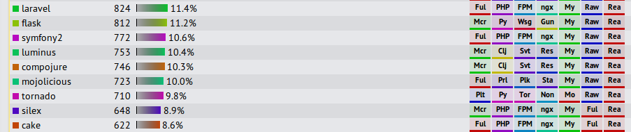

Laravel4 vs. Symfony2
Which one to choose?
Created by Tautvilas Mečinskas
Powered by reveal.js
2013 10
Why this talk?
Framework choice matters.
About me
- First php program 10 years ago
- Since then developed in PHP, Java, Python and Javascript
- For the Last 2 years developed mainly in PHP
- Used mainly laravel3/4 and symfony2.0-2.3 in client projects
Laravel
“The elegant php framework for web artisans”
- Appeared in June 2011
- Laravel4 released in May 2013
- Laravel4 is not much different from Laravel3
- Created by Taylor Otwell
- Sponsored by several companies
- 152 contributors on github & ~2500 commits
Symfony
“High Performance PHP Framework for Web Development”
- Appeared in October 2005
- Symfony2 released in July 2011
- Symfony2 is completely different from Symfony
- Created by Fabien Potencier
- Developed by Sensio Labs
- 771 contributors on github & 10,000+ commits
Laravel4 and Symfony2 similarities
- PHP 5.3 frameworks for web applications
- Dependencies managed with Composer
- Laravel4 uses several Symfony2 core components
- Both have command-line tools
- Both use Dependency Injection
Installation
Laravel4:
composer create-project laravel/laravel --prefer-dist
Symfony2:
composer create-project symfony/framework-standard-edition path/ 2.3.5
Configuration
Laravel4
return array(
'default' => 'mysql',
'connections' => array(
'mysql' => array(
'driver' => 'mysql',
'host' => 'localhost',
'database' => 'database',
'username' => 'root',
'password' => '',
),
),
);
Configuration
Symfony2
- YAML
- XML
- PHP
- INI
- Annotations
Configuration
Symfony2
Default: Yaml
parameters:
database_driver: pdo_mysql
database_host: 127.0.0.1
database_port: null
database_name: symfony
database_user: root
Routing
Laravel4
Simple routes
Route::get('user/{name?}', function($name = null)
{
return $name;
});
Route::get('user/profile', array('uses' => 'UserController@showProfile'));
Routing
Laravel4
RESTful Controller
class UserController extends BaseController {
public function getIndex()
{
//
}
public function postProfile()
{
//
}
}
Route::controller('users', 'UserController');
Routing
Symfony2
There are many ways...
- YAML
- XML
- PHP
- Annotations
Routing
Symfony2
YAML:
contact_process:
path: /contact
defaults: { _controller: AcmeDemoBundle:Main:contactProcess }
methods: [POST]
Annotations:
/**
* @Route("/", defaults={"id" = 1})
* @Route("/{id}")
*/
public function showAction($id)
{
}
Security
Laravel4
if (Auth::attempt(array('email' => $email, 'password' => $password)))
{
return Redirect::intended('dashboard');
}
Route::get('profile', array('before' => 'auth', function()
{
// Only authenticated users may enter...
}));
No authorization (roles)
Security
Symfony2

Security
Symfony2
- Pretty complicated to setup
- Has roles and role inheritance
- Has firewalls
- You can use FosUserBundle (or other)
Templating
Laravel4:
- Blade templating language
- PHP templates
Symfony2:
- Twig templating language
- PHP templates
Templating
Twig vs Blade
- Twig has more features
- Twig does not allow php code inside template
It is possible to use twig inside Laravel4 using TwigBridge
It is possible to hook in other templating engines to Symfony2
Forms
Laravel4
- Easy to get working
- Implementation can get tedious
- No form data binding to entities
Forms
Symfony2
- Very powerful form theming
- You can automate everything
- Form data automatically bound to DB entities
- Sometimes hard/impossible to do it symfony way
- Steep learning curve
- Does not play nicely with AJAX forms
Forms
Symfony2
Ideal view will look like this:
{# src/Acme/TaskBundle/Resources/views/Default/new.html.twig #}
{% form_theme form 'AcmeTaskBundle:Form:fields.html.twig' %}
{{ form(form) }}
Ideal controller will look like this:
public function newAction(Request $request) {
$task = new Task();
$form = $this->createForm(new TaskType(), $task);
$form->handleRequest($request);
if ($form->isValid()) {
$this->getEntityManager()->persist($task);
$this->getEntityManager()->fulsh();
return $this->redirect($this->generateUrl('task_success'));
}
return array('form'=>form->createView());
}
But it's not easy to get there...
Database
Laravel4
Homebrew solution:
- Plain PDO queries
- Query builder
- Eloquent ORM
- Migrations
Easy to learn
Fallback to PDO queries is not painful
Database
Symfony2
3rd party libraries Doctrine or Propel:
- Steeper learning curve
- More powerful
- Some fancy queries are impossible (Doctrine)
- Might limit your database design (Doctrine)
Performance
Laravel4 is a little faster than Symfony2
Benchmark by TechEmpower. Responses per second at 20 queries per request, Linux on i7
Laravel feels much faster (no app_dev.php)
Code style
Laravel4
- Global facades
- Imports not necessary
- Concise naming style
$name = Input::get('name', 'Sally');
Code style
Laravel4
- Global facades
- Imports not necessary
- Concise naming style
$name = Input::get('name', 'Sally');
Testability
Laravel4
public function getIndex()
{
Event::fire('foo', array('name' => 'Dayle'));
return 'All done!';
}
public function testGetIndex()
{
Event::shouldReceive('fire')->once()->with('foo', array('name' => 'Dayle'));
$this->call('GET', '/');
}
Code style
Symfony2
- Correct OO approach
- Imports everything, no globals
- Java-like verbose naming
$name = $this->getRequest()->get('name', 'Sally');
Code style
Symfony2
namespace CompanyX\UserBundle\Controller;
use FOS\UserBundle\Controller\RegistrationController as BaseController;
use FOS\UserBundle\Entity\UserManager;
use FOS\UserBundle\Form\Model\CheckPassword;
use FOS\UserBundle\Model\UserInterface;
use FOS\UserBundle\Model\UserManagerInterface;
use Imagine\Filter\Transformation;
use Imagine\Gd\Imagine;
use Imagine\Image\Box;
use CompanyX\MainBundle\Form\DataTransformer\StringToNumberTransformer;
use CompanyX\MainBundle\MpController;
use CompanyX\ReportBundle\ReportGenerator;
use CompanyX\UserBundle\Entity\RoleType;
use CompanyX\UserBundle\Entity\User;
use CompanyX\UserBundle\Entity\UserPeriod;
use CompanyX\UserBundle\Entity\UserSalary;
use CompanyX\UserBundle\Entity\UserSort;
use CompanyX\UserBundle\Form\Type\CredentialsForm;
use CompanyX\UserBundle\Form\Type\UserFormType;
use CompanyX\UserBundle\Form\Type\UserSalaryType;
use CompanyX\WorkBundle\DateUtils;
use PDOException;
use Sensio\Bundle\FrameworkExtraBundle\Configuration\Route;
use Sensio\Bundle\FrameworkExtraBundle\Configuration\Template;
use stdClass;
use Symfony\Bundle\FrameworkBundle\Controller\Controller;
use Symfony\Component\Form\Exception\TransformationFailedException;
use Symfony\Component\Form\FormError;
use Symfony\Component\HttpFoundation\RedirectResponse;
use Symfony\Component\HttpFoundation\Request;
use Symfony\Component\HttpFoundation\Response;
use Symfony\Component\Security\Core\Authentication\Token\UsernamePasswordToken;
use Symfony\Component\Security\Core\Exception\AccessDeniedException;